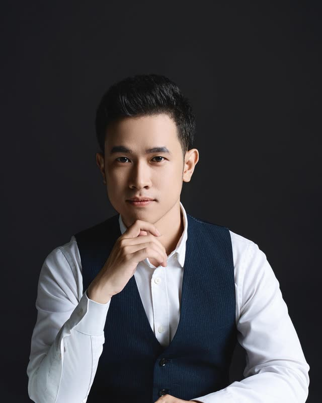
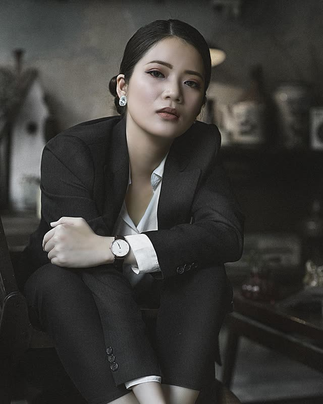
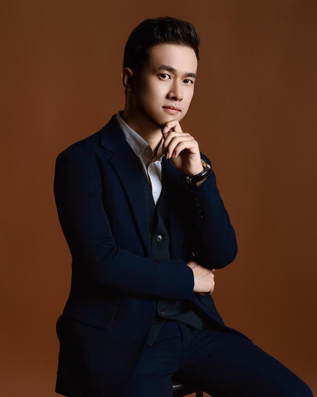
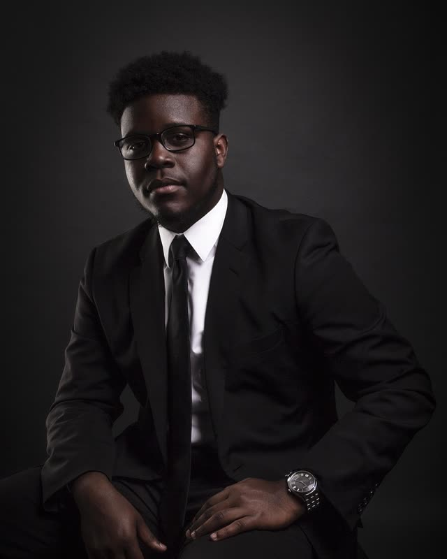
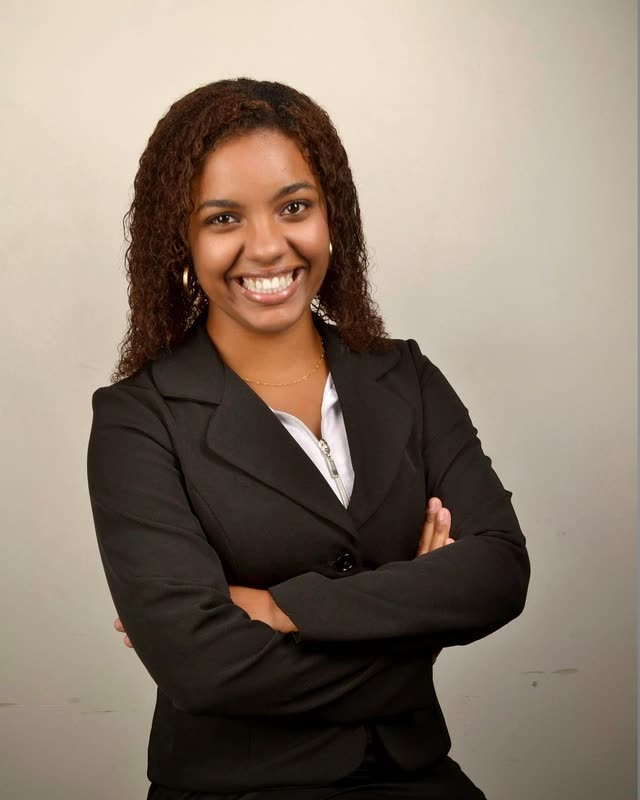
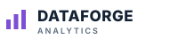
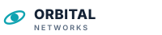
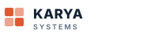
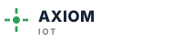
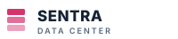

Tentang MIT · Sejak 2011
Rekayasa
sejak 2011.
MIT berawal pada 2011 sebagai tim kecil rekayasa jaringan di Jakarta. Lima belas tahun kemudian, MIT menjadi perusahaan rekayasa teknologi dan transformasi digital dengan lima unit bisnis — dengan kebiasaan yang sama: tetap mendampingi klien jauh setelah go-live.


MIT dalam angka
Angka ilustrasi untuk pratinjau — menunggu konfirmasi MIT.
Perjalanan kami
Berdiri di Jakarta
Rekayasa jaringan dan data center untuk klien enterprise.
Managed services
Kontrak service desk 24/7 dan operasional infrastruktur pertama.
Praktik keamanan siber
Asesmen, penetration testing, dan pemantauan keamanan.
Solusi enterprise
ERP, CRM, serta aplikasi web dan mobile kustom.
AI & digital engineering
Peluncuran unit data, AI, dan Industrial IoT.
Lima unit bisnis
Satu mitra dari strategi hingga operasional.
Visi
Menjadi mitra teknologi yang dipercaya organisasi Indonesia untuk merekayasa langkah berikutnya.
Misi
- Menyelesaikan masalah bisnis nyata dengan teknologi yang dirancang untuk bertahan lama.
- Bekerja end-to-end — strategi, pengembangan, dan operasional — bersama satu tim yang bertanggung jawab.
- Menjaga sistem dan data klien seperti milik kami sendiri.
- Mengembangkan talenta engineering Indonesia melalui praktik langsung dan pelatihan.
Nilai-nilai kami
Integritas
Kami melakukan apa yang kami janjikan — dan melapor dengan jujur saat ada yang tidak berjalan.
Keunggulan engineering
Arsitektur yang baik, kode yang teruji, dan dokumentasi adalah bagian dari setiap delivery.
Kemitraan
Keberhasilan kami diukur dari hasil klien, bukan dari selesainya proyek.
Belajar berkelanjutan
Teknologi bergerak cepat; kami pun begitu, melalui sertifikasi dan praktik.
Pimpinan
Nama dan foto masih placeholder untuk pratinjau.

Andi Pratama
Direktur Utama
Lebih dari 20 tahun di bidang TI enterprise dan telekomunikasi. Memimpin strategi perusahaan dan kemitraan klien utama.

Sari Wulandari
Chief Operating Officer
Mengelola delivery dan operasional managed services di kelima unit bisnis.

Budi Santoso
Chief Technology Officer
Arsitek di balik standar engineering, praktik cloud, dan AI MIT.
Maya Kusuma
Chief Financial Officer
Mengawasi keuangan, tata kelola, dan pengadaan MIT beserta proyeknya.

Rizky Hidayat
Head of Cybersecurity
Memimpin tim asesmen keamanan dan SOC; sebelumnya memimpin tim incident response.

Dewi Lestari
Head of AI & Data
Membangun solusi AI, analitik, dan knowledge management MIT.
Sertifikasi
Mitra teknologi
Logo placeholder untuk pratinjau.
Platform cloud
Keamanan

Data & BI
Jaringan
Aplikasi enterprise
Industrial IoTPlatform AI

Data center